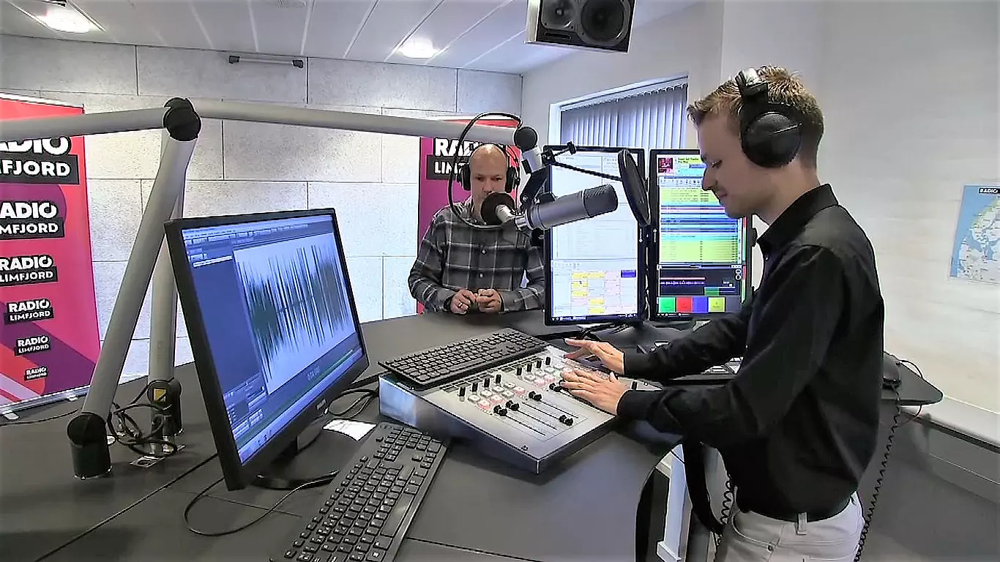

Del b
Modtagerrettet kommunikation
Formelt brev
Del c
Skriftlig fremstilling
- Dyre vaner og luksusvarer
- Nytårstalen
- At føle sig anderledes
Kl. 9.00-13.00
Før du skriver
Til eleven
Til denne prøve i skriftlig fremstilling har du adgang til internettet.
Du må ikke kommunikere eller dele dine dokumenter med andre under prøven.
Hvis du i din tekst anvender informationer, citater, billeder, ressourcer fra internettet eller
fra andre steder, skal du angive kilderne sidst i besvarelsen. Hvis du anvender kilder fra
prøveoplægget, behøver du ikke at angive dem i din tekst.
Din tekst vurderes på, hvor godt du udfolder de tre vurderingsdimensioner funktion, indhold
og form på en sammenhængende og meningsfuld måde i din tekst.
Du vurderes efter de samme vurderingskriterier i både b- og c-delen.
Se vurderingskriterierne nedenfor.
God arbejdslyst!
Vurderingskriterier til eleven
Der gives én karakter baseret på en helhedsvurdering af tre dimensioner: funktion, indhold og form
|
Vurderings- dimension |
Vurderings- område |
Vurderingsspørgsmål |
| Funktion | Skrivesituation |
I
hvilken grad fungerer din tekst i den skrivesituation, som opgaven beskriver? |
| Opgavens krav | I hvilken grad opfylder du opgavens krav til afsender, modtager og fremstillingsformer? | |
| Indhold | Mening | I hvilken grad udtrykker din tekst et meningsfuldt indhold med omverdensforståelse og refleksion? |
| Ressourcer | I hvilken grad bruger du opgaveforlægget, din egen faglige viden og internettet i din tekst? | |
| Form |
Tekstsammen-
hæng |
I hvilken grad hænger din tekst sammen sprogligt, og er der velvalgte afsnit og modaliteter? |
| Skrift og andre modaliteter | I hvilken grad bruger du tegnsætning, tekstbehandlingsprogrammets funktioner og ord, så det understøtter den situation, teksten skal bruges i? |
Formelt brev
Din kommune ønsker at bygge en ny udskolingsafdeling på din skole. De vil gerne skabe
undervisningsmiljøer, der kan fremme elevernes læring og trivsel.
Kommunen henvender sig til jer, fordi de er interesserede i at høre, hvad I som udskolingselever
tænker.
Klik og se, hvordan man i Guldborgsund Kommune har planer om at indrette en ny skole:
Kilde: skala architecture
På vegne af din klasse skriver
du et forslag til, hvordan en moderne udskolingsafdeling skal se ud og indrettes, så den fremmer
både læring og trivsel.
|
Skriv et formelt brev, der skal sendes som mail til din kommune. Som forberedelse skal du se filmen og inddrage gode ideer fra Guldborgsund Kommune i din tekst. I din tekst skal du:
Din tekst skal være på 250-350 ord. Angiv antal ord. |

|
Du skal vælge en af disse opgaver:
Du skal skrive den valgte opgaves nummer og titel på din
besvarelse. |
For nogle unge er dyre vaner og luksusvarer en høj prioritet, hvilket kan have konsekvenser for deres hverdag.
Se uddraget af udsendelsen her:
foto:broadcastdesign.dk/video:dr.dk
Du har en holdning til emnet og
vælger derfor at poste et indlæg til dine følgere på din personlige blog.
|
Skriv et indlæg til din personlige blog. Som forberedelse skal du se uddraget af udsendelsen og søge yderligere viden om unge, luksusvarer og dyre vaner. I din tekst skal du:
|

Foto: Bent Løkke Leth/ Kilde: tvmidtvest.dk
Lyt til radiospot her:
Kilde: Motschmedia
Nytårstaler tager afsæt i det år, der er gået, og udtrykker håb og ønsker til det år, der kommer.
Din lokale radiostation planlægger at sende et nytårsprogram, og de efterlyser unge, der vil skrive årets nytårstale. De bedste taler vil blive læst op i radioen nytårsaftensdag.
Du vælger at bidrage med en tale.
|
Skriv teksten til din nytårstale. Som forberedelse til din tekst skal du søge informationer om begivenheder, som har haft stor betydning for unge i året, der er gået. Du skal inddrage disse i din tale. I din tekst skal du:
|
Et bogforlag vil udgive en antologi med temaet "at føle sig anderledes". Udgivelsen er til unge læsere på 14-18 år.
Du ser filmen Golden og beslutter dig for at bidrage med en fiktionstekst, der er inspireret af filmen.
Kilde: Kai Stäniche/youtube.com
|
Skriv fiktionsteksten til antologien med temaet "at føle sig anderledes". Som forberedelse skal du se filmen Golden. Teksten skal have:
|